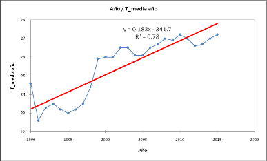

República de Guinea Ecuatorial
MINISTERIO DE AGRICULTURA, GANADERIA, BOSQUES Y MEDIO AMBIENTE
Malabo, junio de 2022
ANDEGE: Amigos de la Naturaleza y el Desarrollo de Guinea Ecuatorial
CARPE: Programa Medioambiental de la Región de África Central
CC: Cambio Climático
CH4: Metano
CMNUCC: Convención Marco de las Naciones Unidas sobre Cambio Climático
CDN: Contribuciones Determinadas a nivel Nacional
CPDN: Contribuciones Previstas Determinadas a nivel Nacional
CO: Monóxido de carbono
CO2eq: Dióxido de Carbono equivalente
CO2: Dióxido de Carbono
COMIFAC: Comisión de los Bosques de África Central
COP: Conferencia de las Partes de la CMNUCC
COVID19: Coronavirus 2019
FAO: Organización de las Naciones Unidas para la Alimentación y la Agricultura
GEI: Gases de Efecto Invernadero
Gg: Giga gramos
INCOMA: Instituto Nacional para la Conservación del Medio Ambiente
INDEFOR-AP: Instituto Nacional de Desarrollo Forestal y Gestión de Áreas Protegidas
INEGE: Instituto Nacional de Estadísticas de Guinea Ecuatorial
INGEI: Inventario Nacional de Gases de efecto Invernadero
IPCC: Panel Intergubernamental de Expertos sobre Cambio Climático (por sus siglas en inglés)
MAGBMA: Ministerio de Agricultura, Ganadería, Bosques y Medio Ambiente
NAMA: Acción de Mitigación Nacionalmente Apropiada (NAMA por sus siglas en inglés)
N2O: Óxido Nitroso
ODS: Objetivos de Desarrollo Sostenible
ONG: Organización No Gubernamental
PANDER: Plan de Acción Nacional de Desarrollo de Energías Renovables
PCNGE: Primera Comunicación Nacional de Guinea Ecuatorial
PIB: Producto Interior Bruto
PNAF: Plan Nacional de Acción Forestal
PNCC: Programa Nacional de Cambio Climático
PNDES: Plan Nacional de Desarrollo Económico y Social
PNI-REDD+: Plan Nacional de Inversión para la Reducción de Emisiones por Degradación y Deforestación, manejo del bosque, conservación de bosque y el stock de carbono
PNUD: Programa de las Naciones Unidas para el Desarrollo
PPFVC: Programa País del Fondo Verde para el Clima
REDD +: Reducción de Emisiones por Degradación y Deforestación, manejo del bosque, conservación de bosque y el stock de carbono.
TCO2: Toneladas de Dióxido de Carbono
UICN: Unión Internacional de la Conservación de la Naturaleza
UNGE: Universidad Nacional de Guinea Ecuatorial
UTCUTS: Uso de la tierra, cambios de uso de la tierra y selvicultura
En el año 2015, la Republica de Guinea Ecuatorial elaboró y presentó a la Convención Marco de las Naciones Unidas sobre Cambio Climático (CMNUCC), su Primera Contribución Determinada a nivel Nacional (CDN). En el año 2018, ratificó el acuerdo de Paris; cuyo objetivo principal del es mantener el aumento de la temperatura media mundial por debajo de 2°C con respecto a los niveles preindustriales y proseguir los esfuerzos para limitar ese aumento de temperatura en 1,5°C.
En la COP25, que se desarrolló en Madrid, adoptó que los estados partes aumentaran la ambición de sus CDN y de los sectores de forma urgente.
Dentro de esta perspectiva, Guinea Ecuatorial ha realizado la presente Actualización de sus CDN desde el año 2019, pudiendo paralizar el proceso por la pandemia COVID19; reanudando el proceso en el año 2021 con 9 consultorías y reuniones de validación.
El resultado del INGEI, elaborado de abril del 2021 a marzo del 2021, fue un aumento de las emisiones de GEI de forma progresiva. Teniendo en cuenta que la ambición de Guinea Ecuatorial en la primera CDN fue reducir las emisiones en un 20% para el año 2030, con la meta de alcanzar el 50% para el 2050, con referencia al año 2010. La ambición de Guinea Ecuatorial en su CDN actualizada se ha aumentado y tiene el objetivo de reducir las emisiones en un 35% para el año 2030, con la meta de alcanzar el 50% para el 2050, con una reducción total de 379.291,54 Gg CO2eq, con referencia al año 2019 (446.215,38 Gg CO2eq). La próxima actualización será en el año 2027.
Para reducir dichas emisiones, se ha seleccionado una serie de actividades adaptativas, actividades de mitigación y transversales, que están alineadas a los Objetivos de Desarrollo Sostenible (ODS), así como Temas Prioritarios territoriales del país y lucha contra el Cambio Climático, sus sectores y los departamentos involucrados; la estimación de los montos requeridos por acción y posibles fuentes de financiación.
Una de las exigencias de la decimonovena Conferencia de las Partes (CoP-19) de la Convención Marco de las Naciones Unidas sobre Cambio Climático (CMNUCC), celebrada en la ciudad de Varsovia (Polonia) en el año 2013, fue invitar a los países Partes a realizar esfuerzos por iniciar e intensificar los preparativos para la elaboración de las llamadas Contribuciones Previstas y Determinadas a Nivel Nacional (CPDN o NDCs en inglés por sus siglas), con el único propósito de lograr un compromiso mundial que tiende a reducir al máximo las emisiones de Gases de Efecto Invernadero (GEI), en un acuerdo mundial vinculante.
La COP17, celebrada en Durbán (Sudáfrica) propuso aprobar en la COP21 de París un Acuerdo Vinculante, lo que fue el tema prioritario de la COP20, celebrada en Lima (Perú), en diciembre de 2014, adoptando la decisión 1/COP20.
Entre los logros obtenidos durante la COP 20 también se incluye: i) el refuerzo en la invitación y en la definición del plazo para que cada una de las Partes comunique a la secretaría de la CMNUCC sus contribuciones previstas y determinadas a nivel nacional (conocidas como INDCs, por sus siglas en inglés y posteriormente convertidas en la primera NDC en el momento de la ratificación del Acuerdo de Paris); ii) la invitación a las Partes a que consideren incluir iniciativas o componentes de adaptación en sus CDN; iii) el incentivo a que cada país sea más ambicioso en la formulación de sus contribuciones nacionales; y, iv) la solicitud a la secretaría de la CMNUCC para que elaborase, a más tardar el 1 de noviembre de 2015, un informe de síntesis que contuviese el efecto agregado de las CDN que hayan sido presentadas por las Partes hasta el 1 de octubre de 2015. Para garantizar la aplicabilidad de lo expuesto, la mayoría de los países Partes de la Convención están dispuestos a participar en la lucha común contra el cambio climático. Razón por la cual, la República de Guinea Ecuatorial como Parte de la Convención tuvo que elaborar y presentar su primera Contribución Nacional; la misma reflejó en aquel entonces la realidad del país y justifica la voluntad política del Gobierno para luchar contra los efectos del cambio climático.
Posteriormente, ya durante la COP 21 y sobre la base de las acciones y negociaciones realizadas en el marco de la Agenda Lima-París, 195 naciones aprobaron por unanimidad un acuerdo global sin precedentes para combatir el cambio climático e impulsar medidas e inversiones para un futuro bajo en emisiones de carbono, resiliente y sostenible, el llamado Acuerdo de París. Los objetivos del Acuerdo son mantener el aumento de la temperatura media mundial por debajo de 2°C con respecto a los niveles preindustriales y proseguir los esfuerzos para limitar ese aumento de temperatura en 1,5°C. Adicionalmente, el Acuerdo plantea aumentar la capacidad de adaptación a los efectos adversos del cambio climático y promover la resiliencia al clima y un desarrollo con bajas emisiones de GEI, así como situar los flujos financieros en un nivel compatible con una trayectoria que conduzca a un desarrollo bajo estas características.
La COP21 celebrada en el año 2015 ha sido clave en las negociaciones y de mucha expectativa para el futuro de la Madre Tierra, adoptando el Acuerdo de Paris sobre el Cambio Climático Global. Desde entonces, como un indicador del apoyo político de las partes, se ha tomado una iniciativa de ejecución de las CDN, teniendo como prioridad su alcance, definición, obligatoriedad, así como su transparencia.
El Acuerdo de París señala que todas las Partes deben realizar y comunicar esfuerzos ambiciosos relacionados a sus Contribuciones Determinadas a Nivel Nacional (CDN), que constituyen la respuesta mundial al cambio climático. Además, indica que las Partes se proponen lograr que las emisiones mundiales de GEI alcancen su punto máximo lo antes posible, llevando en consideración que los países en desarrollo tardarán más en lograrlo, y que, a partir de ese momento, las emisiones de GEI deberían reducirse rápidamente, de conformidad con la mejor información científica disponible sobre la base de la equidad y en el contexto del desarrollo sostenible y de los esfuerzos por erradicar la pobreza. Siendo así, cada una de las Partes deberá aumentar la ambición de sus contribuciones nacionales en las sucesivas comunicaciones a la Convención, en periodos de cinco años, teniendo en cuenta sus responsabilidades comunes pero diferenciadas y sus capacidades respectivas, a la luz de las diferentes circunstancias nacionales.
En la fecha del 16 de julio de año 2018, la Republica de Guinea Ecuatorial ratificó el acuerdo de Paris.
La COP25 se desarrolló en Madrid entre el 2 y el 15 de diciembre con absoluta normalidad y finalizó con la adopción de un acuerdo con las siguientes cláusulas:
El multilateralismo y la ciencia se impusieron en la COP25, y el acuerdo reivindica que el conocimiento científico sea el eje principal que debe orientar las decisiones ante el cambio climático y el aumento de la ambición de los países y de los sectores.
El acuerdo pide un aumento de la ambición de los compromisos de lucha contra el cambio climático en 2020, siguiendo el calendario marcado en el Acuerdo de París y manifiesta la “urgente necesidad” de que esos nuevos compromisos de los países salven la brecha existente en los actuales, con respecto al objetivo de París, de evitar un aumento de temperatura superior a 1,5 grados.
Se compromete a trabajar y profundizar en las respuestas a los daños irreversibles que provoca el cambio climático en los países más vulnerables en el marco del Mecanismo de Pérdidas y Daños
Pacta un nuevo Plan de Género para dar respuesta al efecto desigual del cambio climático en las mujeres y niñas
Los países se emplazan a trabajar en el diseño de mecanismos de mercado en la próxima COP que eviten la doble contabilidad, que sirvan a la ambición del Acuerdo de París y que garanticen la integridad ambiental del sistema
Por último, la COP25 da un impulso y reconocimiento a la acción de los actores no gubernamentales procedentes de todos los sectores. Las COPs ya no sólo son un foro para fijar reglas. En este sentido, la Decisión final reconoce la importancia de los actores no gubernamentales en la acción climática, les invita a que incrementen su acción en la lucha contra el cambio climático y que generalicen estrategias compatibles con el clima.
Dentro de estas realidades, la Republica de Guinea Ecuatorial ha actualizado sus Contribuciones Determinas a nivel Nacional para presentar su nueva ambición a la CMNUCC.
A través de la actualización de la CDN, Guinea Ecuatorial refrenda su compromiso con la lucha contra el cambio climático la cual requiere, hoy como nunca, de la acción de todos los países. Nuestro mundo enfrenta una crisis civilizatoria de gran alcance con diferentes facetas: los efectos adversos del cambio climático que se manifiestan en desequilibrios ecosistémicos exacerbados por un modelo de crecimiento económico que no ha considerado los límites del medio ambiente y la capacidad planetaria de los sistemas que sostienen la vida; una pérdida de la bioculturalidad y de la riqueza de tradiciones que caracterizan nuestras sociedades, donde la pobreza es una manifestación lacerante de un modelo de crecimiento excluyente y depredador; así como una crisis sanitaria la cual nos recuerda que la degradación de los ecosistemas causada por el aprovechamiento desmedido de la vida silvestre y los problemas de salud están intrínsecamente vinculados, y que éstos pueden comprometer el bienestar social y económico de nuestro hogar común.
El Gobierno de la Republica de Guinea Ecuatorial ha adoptado la Agenda 2030 de las Naciones Unidas y sus 17 Objetivos de Desarrollo Sostenible (ODS) y la Agenda 2063 de la Unión Africana. Internalizando todo ello en el nuevo Plan Nacional de Desarrollo Económico y Social hacia horizonte 2035 (PNDES), elaborado en el año 2019, en el cual se establecieron 4 bloques temáticos de prioridad nacional: El Bloque 1, es la Erradicación de la Pobreza, que centra su análisis sobre los ODS específicos: ODS1, ODS2, ODS3, ODS4, ODS6, ODS8 y ODS17; el Bloque 2 es la Inclusión Social y Paz Sostenible, que se centra su análisis en los ODS específicos: ODS5, ODS10, ODS16, ODS17; el Bloque 3, que es la Productividad e Industrialización, que centra su análisis sobre los ODS específicos: ODS8, ODS9 y ODS17 y, el Bloque 4, de la Sostenibilidad Medioambiental, que se centra en los ODS específicos: ODS7, ODS11, ODS12, ODS13, ODS14, ODS15 y ODS17.
Tras esta revisión de PNDS 2035, llegó la pandemia del COVID19 en 2020, que ha obligado a las naciones a replantear sus modelos de desarrollo. Bajo este contexto, la actualización de nuestra CND en el marco del Acuerdo de París establece las bases para avanzar hacia una recuperación responsable y sostenible. El Gobierno de Guinea Ecuatorial reconoce el estrecho vínculo entre la protección del medio ambiente y el bienestar de la población como una condición necesaria para acceder a otras dimensiones del bienestar como son la salud, la seguridad alimentaria y el empleo.
Durante la COVI-19, se empezó el proyecto de actualización de la CDN y el INGEI (2014-2021), que no se avanzó en el año 2020 por la falta de toma de datos y los arreglos institucionales. A medida que se iba reduciendo la COVID-19, se fueron obteniendo los datos necesarios para la actualización.
Por su carácter, las contribuciones previstas y determinadas a nivel nacional en la República de Guinea Ecuatorial se articulan en dos ejes temáticos principales:
La Adaptación al cambio climático, como país vulnerable; incluyendo:
Integración del cambio climático y problemas de variabilidad climática en las políticas y los procesos de planificación a nivel nacional, regional y local;
Implementación de estrategias para la reducción de riesgos y medidas de adaptación en sitios piloto;
Fortalecer la capacidad técnica para integrar los riesgos climáticos en la gestión de las zonas costeras, y
Difundir lecciones aprendidas a los actores clave
La atenuación de emisiones de Gases de Efecto Invernadero (GEI) a la atmósfera, teniendo en cuenta los sectores más influentes en el impacto climático nacional:
Sector Energía
Sector Procesos industriales y uso de productos
Sector Agricultura, Silvicultura y Cambio de Uso de Suelos
Sector Residuos
Para ello, es indispensable garantizar una financiación tanto nacional como internacional, para así hacer frente a las necesidades identificadas.
El objetivo de la Contribución, es establecer los mecanismos para la reducción de las emisiones de Gases de Efecto Invernadero (GEI) a largo plazo; situar la progresión de los países en la lucha contra cambios climáticos en el período 2030-2050 en coherencia con la trayectoria post 2050, con el propósito de contener el aumento del Calentamiento Global por debajo de 2ºC en relación al periodo preindustrial.
Anteriormente, no se planteó la idea de elaborar los arreglos institucionales, de hecho, en el INGEI realizado en 2013, se pudo recolectar pocos datos a nivel nacional, sino gran parte de datos fueron recogidos de fuentes de organismos internacionales razón por la cual, en la actualidad se sigue constatando la falta de existencia de bases de datos sectoriales, los archivos de datos físicos desordenados, fraccionados y de diferentes resultados, la falta de acreditación y de puntos focales sectoriales, la falta de una normativa y/o estrategia de recolecta de datos.
La actual campaña de recolecta de datos para el INGEI 2021, se realizó con la priorización del arreglo institucional elaborado por el MAGBMA en 2019, para ello, se designó puntos focales en departamentos de sectores involucrados, los cuales asistieron a la formación realizada por el
MAGBMA el 27 de agosto de 2021 sobre los requerimientos para recolectar los datos y la forma de conservarlos.
Todos los encuetados consideran que el actual esquema de recolecta de datos para el INGEI, no está dando los resultados esperados debido a que la coordinación está siendo más a nivel de papeles que en la realidad y los diferentes ministerios sectoriales siguen funcionando de manera paralela, resaltando que el acuerdo de colaboración institucional elaborado por el MAGBMA en 2019 solo tres ministerios (Interior y Corporaciones Locales, Sanidad y Bienestar Social y Pesca y Recursos Hídricos) reaccionaron positivamente nominando a sus puntos focales.
El sistema actual de los arreglos institucionales cuenta con recursos humanos suficientes, pero requiere apoyo tanto logístico como económico para ejercer eficazmente su cometido.
La Contribución de la República de Guinea Ecuatorial ha sido elaborada bajo la supervisión del Ministerio de Agricultura, Ganadería, Bosques y Medio Ambiente, a través de la Dirección General de Medio Ambiente con la colaboración del Grupo de Expertos de la Coordinación Nacional de Cambios Climáticos y la Asistencia Técnica Internacional del PNUD.
Los datos recogidos en la documentación son de origen nacional y de base de datos internacionales (FAO e IPCC), con un enfoque participativo de actores clave.
Figura 1.- Funcionamiento del arreglo institucional
En el proceso de actualización de CDN, se ha trabajado con diferentes actores claves: 1) actores institucionales en la recogida de datos de actividad para la actualización de INGEI 2021, 2) actores consultores sectoriales, 3) actores en la validación de los informes de los consultores, en ellos, se involucraban los del sector público, sector privado, sociedad civil e instituciones internacionales.
Los actores poseedores de datos de actividad son: Ministerio de Industria y Energía, Ministerio de Aviación Civil, Ministerio de Minas e Hidrocarburos, Ministerio de Correos, transporte y telecomunicaciones, Ministerio Agricultura, Ganadería, Bosques y Medio Ambiente, Ministerio de Obras Públicas, Viviendas y Urbanismo y Ministerio del Interior y Corporaciones Locales.
En los 9 talleres de validación de los informes de los consultores, se tuvo en cuenta el enfoque del género en la participación.
Teniendo en cuenta los principios de acceso a la información y participación pública, también se tuvo una estrategia de participación y comunicaciones para la socialización y sensibilización del público sobre la gestión de cambio climático en el país y la actualización de la NDC a través de una consultoría. Para facilitar la efectiva participación de la ciudadanía, las piezas de comunicación se diseñaron a partir de una segmentación de actores que permitió mantener un enfoque multicultural y de género en la medida de lo posible, y adecuar los mensajes al nivel de conocimiento y las necesidades de información de los públicos objetivo.
Durante el desarrollo de esta actualización, se realizó un diagnóstico institucional con el propósito de identificar carencias o problemas en los arreglos institucionales existentes y proponer soluciones viables y factibles. Para ello, la técnica de investigación se centró en la revisión de trabajos realizados, entrevistas a los dirigentes de entidades encargados en temas de cambio climático a nivel nacional e incluyendo a responsables de departamentos sectoriales priorizados en el INGEI realizado en 2013 y conforme a lo establecido en los artículos 4 y 12 de la CMNUCC, que dicen:
Art.4: Todas las Partes, teniendo en cuenta sus responsabilidades comunes pero diferenciadas y el carácter específico de sus prioridades nacionales y regionales de desarrollo, de sus objetivos y de sus circunstancias, deberían: a) Elaborar, actualizar periódicamente, publicar y facilitar a la Conferencia de las Partes, de conformidad con el artículo 12, inventarios nacionales de las emisiones antropógenas por las fuentes y de la absorción por los sumideros de todos los gases de efecto invernadero no -6- controlados por el Protocolo de Montreal, utilizando metodologías comparables que habrán de ser acordadas por la Conferencia de las Partes.
Art. 12: Cada una de las Partes transmitir· a la Conferencia de las Partes, por conducto de la secretaría, los siguientes elementos de información: a) Un inventario nacional, en la medida que lo permitan sus posibilidades, de las emisiones antropógenas por las fuentes y la absorción por los sumideros de todos los gases de efecto invernadero no controlados por el Protocolo de Montreal, utilizando metodologías comparables que promover· y aprobar· la Conferencia de las Partes; b) Una descripción general de las medidas que ha adoptado o prevé adoptar para aplicar la Convención; y c) Cualquier otra información que la Parte considere pertinente para el logro del objetivo de la Convención y apta para ser incluida en su comunicación, con inclusión de, si fuese factible, datos pertinentes para el cálculo de las tendencias de las emisiones mundiales.
Guinea Ecuatorial tiene una extensión superficial de 28.051 Km² y se divide en dos regiones importantes: la Continental (26.000 Km²) y la Insular (2.017 Km²). Sobresalen algunas Bahías y Cabos, como es el caso de la Bahía de Luba, Cabo San Juan y Annobón (situada en el hemisferio sur), así como los islotes de Corisco, Elobey Grande, Elobey Chico y Mbañé situadas en el hemisferio norte.
Leyenda: RC = Región Continental y RI= Región Insular
Figura 2.- Mapa de Guinea Ecuatorial.
El país limita al norte con Camerún, al este y al sur con Gabón, y al oeste con el Océano Atlántico. Guinea Ecuatorial está bien dotada de tierras cultivables y recursos minerales que van desde el oro, petróleo, uranio, diamante y la columbita-tantalita. El país también dispone de una Zona Económica Exclusiva (superficie marítima) de 314.000 km², 11 veces superior a la superficie de tierra firme, con 600 km de costa marítima.
La población de Guinea Ecuatorial es de 1.225.377 habitantes (INEGE, Censo de 2015), y presenta una estructura joven caracterizada por elevado número de niños y una cantidad reducida de ancianos (Ministerio de Planificación y Desarrollo Económico, 2002). Según el plan director “Guinea Ecuatorial Horizonte 2020” (2007), el 76,8% de la población se sitúa bajo el umbral de la pobreza, lo que incrementa su vulnerabilidad a la capacidad de responder al
aumento de temperatura, concretamente a la sequía y al aumento de precipitaciones que trae consigo las inundaciones. La economía reposa en gran medida sobre la extracción del petróleo y el gas licuado, así como la exportación de madera, cacao y café.
El clima de Guinea Ecuatorial es de tipo “selva tropical lluviosa” con rasgos de “sabana tropical” en su extremo más oriental. La temperatura media anual es de alrededor de 25ºC. Las lluvias son abundantes y regulares y normalmente suelen superar los 1.500 - 2.000 mm por año.
Los principales recursos del país son la Agricultura, de carácter tradicional e itinerante, que ha prosperado durante la época colonial (cacao, café, aceite de palma, coco). Esta agricultura ha conocido la misma regresión que la explotación forestal, pero nunca se ha recuperado. Solo el 8% de la superficie del país se ha consagrado a la agricultura. Actualmente existen muchos proyectos para potenciar la agricultura, como pueden ser las fincas modelos (fincas piloto o experimentales), que contribuyen a la emisión a la atmosfera de Gases de Efecto Invernadero (GEI). Cualquiera variabilidad extrema, traerá un cambio profundo en la agricultura por ser de pequeña escala.
La madera ha conocido una fuerte disminución después de la independencia (1968), para luego crecer en la década de los noventa. La economía de Guinea Ecuatorial ha reposado en pares de décadas anteriores en la madera, ahora mismo se reposa en petróleo.
Según la FAO, el ritmo de la deforestación crece considerablemente pasando de 58,2 km2 /año en 1990 a 150 km2 /año en el periodo 1990-2005, bajo la acción de desbosques agrícolas y de una explotación forestal muy intensiva. Estas cifras corresponden a una tasa de deforestación de 0,9% (FAO, 2005, en Obiang, 2014).
La última Evaluación de los Recursos Forestales Mundiales 2010 (FRA, por sus siglas en inglés) de la FAO, estima que Guinea Ecuatorial ha perdido de 1990 a 2010 el 12,6% de su cubierta forestal total, lo que corresponde a una tasa de deforestación anual de 0,65%. Mientras que el estudio de inventario de GEI en el sector silvicultura realizado por Obiang (2014), ha estimado una tasa de deforestación de 0,8% que corresponde a 9,4 Gg de emisiones de CO2, que contribuyen efectivamente al efecto invernadero y por consiguiente a la variabilidad climática del país y del mundo.
La producción de petróleo (barriles/año) en Guinea Ecuatorial comenzó entre los años 1992- 1994 y alcanzó su techo máximo en el año 2008, y actualmente presenta una caída. La quema del gas producido en las plantas petrolíferas, aumentaba cada vez que se aumentaba la producción del petróleo, y por consiguiente un aumento de GEI en la atmosfera que contribuyen así al efecto invernadero local y mundial.
El petróleo y el gas, han aumentado de forma espectacular el PIB y sin precedente, que era de 83 millares de CFA en 1995 al comienzo de la explotación petrolífera hasta que se elevó a 5.130 millares de CFA en 2007 (7,8 millares de euros). Más de 90% del PIB nacional proviene de los recursos petroleros. En 1994, el PIB por habitante fue de 201 dólares por habitante, mientras que en 2008 el PIB alcanzó a 7.400 dólares por habitante (CEMAC, 2008). Este aumento del PIB, ayuda al país a la realización de grandes infraestructuras civiles, las cuales contribuyen a la deforestación y por consiguiente a la emisión a la atmosfera de GEI.
En relación a la diversidad biológica (fauna y flora), aunque no se han hecho estudios exhaustivos sobre lo que concierne a la fauna de Guinea Ecuatorial, algunos estudios realizados aseguran una gran diversidad de especies de animales y plantas (Senterre 1999 y 2005). En Bioko se estima que existen unas 2000 especies de plantas de las que más de 40 son endémicas. Los pequeños estudios ornitológicos realizados aseguran igualmente una gran diversidad de aves. La isla de Bioko cuenta también con unas 65 especies de mamíferos, de las cuales 10 son especies de primates y entre ellas siete subespecies de monos son endémicas. Las siete subespecies de monos están amenazadas por la caza de los pobladores de la isla para fines de consumo de proteínas de origen animal.
En la Región Continental, al igual que en la Isla de Bioko, existe una gran diversidad de mamíferos como los elefantes (Loxondonta africana), gorilas (Gorilla gorilla), chimpancés (Pan troglodytes), mandriles (Mandrillus sphinx), panteras (Panthera pardus) y numerosas especies de antílopes, anfibios, reptiles y aves. La caza de estas especies es apreciada y en consecuencia una amenaza muy seria. Adicionalmente, la evidencia del aumento significativo de la temperatura y el cambio de precipitación en las localidades objeto del estudio, conllevaría a que esta diversidad esté cada vez más en peligro de extinción
Entre los 55 Marcos Legales Nacionales analizados, se ha encontrado que todos son obsoletos en relación a los GEI, es decir no contemplan artículos o definiciones sobre Emisiones de GEI, a excepción del PANDER, PNI-REDD+ y el Plan de Mitigación de la Aviación Civil.
Aunque los demás marcos legales tienen aspectos generales de Conservación del Medio Ambiente que pueden contribuir en la reducción de emisiones de GEI, 45 de ellos carecen de Reglamentos de Aplicación.
En el marco de la actualización de la CDN, se busca que los proyectos a financiar estén alineados con las prioridades y estrategias de las Políticas Nacionales que contribuyen a la mitigación del Cambio Climático, las cuales buscan orientar las decisiones públicas y privadas hacia vías de desarrollo resilientes al clima y bajas en carbono, y a la vez se busca que las prioridades y estrategias que estén enfocadas al cumplimiento de las metas nacionales en el marco del Acuerdo de París con las CDN. Como eje fundamental está la adopción de una visión territorial articulada a iniciativas sectoriales que permita una gestión integral del Cambio Climático, tal y como está propuesto por las diferentes estrategias que la Política articula, las cuales se enlistan a continuación:
Programa Nacional de Acción Forestal (PNAF), adoptado en el año 2000.
Estrategia y Plan de Acción para la Conservación de la Biodiversidad en Guinea Ecuatorial (ENPADIB), adoptada en el año 2005.
Programa de Implementación del “Plan Nacional de Inversión a Medio Plazo en Agricultura y Desarrollo Rural” (PNIMP), adoptada en el año 2005.
Programa Nacional para la Seguridad Alimentaria (PNSA), adoptado en el año 2012.
Plan de Acción Nacional de Adaptación (PANA), el país preparó dicho documento en el año 2013.
Estrategia de Transversalización para la Gestión Sostenible de Suelos y Bosques (ETGSSB), preparada en el año 2013.
Programa de Acción Nacional de Lucha contra la Deforestación y Degradación de tierras en Guinea Ecuatorial (PAN/LCD), el país ha preparado y adoptado dicha estrategia en el año 2015.
Plan de Acción de la República de Guinea Ecuatorial para la Mitigación de Emisiones (PAMEGE) de CO2 procedentes de la Aviación Internacional, preparado y adoptado en el año 2016. Horizonte 2035.
Estrategia Nacional REDD+ (EN-REDD+), adoptada en el año 2018.
Plan de Acción para el desarrollo de Energías Renovables en Guinea Ecuatorial 2018 – 2025 (PAER), este plan fue adoptado en el año 2018.
Plan Nacional de Inversión REDD+ (PNI-REDD+), adoptado en el año 2019.
Nivel de Referencia de las Emisiones Forestales, en 2019.
Programa País del Fondo Verde para el Clima (PPFVC) en 2019.
Así mismo, se considera relevante la alineación de todos estos Planes con el Plan Nacional de Desarrollo Económico y Social (PNDES), al horizonte 2035.
A nivel Regional de África Central se cuenta con, la Comunidad Económica de los Estados de África Central (CEEAC) y la Comisión de Bosques de África Central (COMIFAC). Los planes de acciones más relevantes en el marco del cambio climático son:
La Comunidad Económica de los Estados de África Central (CEEAC), dispone de un Plan de Acción de Reducción de Riesgos Catastróficos (PARRC) 2015 -2030, el cual se inserta dentro de su política general en materia de medioambiente y gestión de los recursos naturales, concretamente en sus ejes: (Eje 1) Lucha contra la degradación de las tierras, la sequía y la desertificación; (Eje 4) Conservación y gestión sostenible de los recursos forestales de África Central; y (Eje 5) Lucha contra el cambio climático en África Central.
En la Comisión de Bosques de África Central (COMIFAC), existe un segundo Plan de Convergencia (PC) 2015-2025 hacia una economía verde. El propósito de esta institución es que todos los países firmantes del tratado ejecuten acciones comunes a nivel nacional, orientadas por el Plan de Convergencia. Este Plan cuenta con seis (6) ejes de temáticas de intervenciones y 3 transversales. El eje de intervención número 4 “lucha contra los efectos del cambio climático y la desertificación”, cuenta con una serie de resultados que se esperan de los estados miembros, los cuales incluyen: (1) Aumento de capacidad ante los efectos del cambio climático, (2) Sistemas de seguimiento y monitoreo de bosques, (3) Estrategias de mitigación (REDD+, Plan Clima, NAMA), (4) Control de emisiones de gases de efecto invernadero provenientes de la deforestación y degradación a partir de un nivel de referencia, (5) Planes de acción nacionales de lucha contra la desertificación, y (6) Aumento de superficies reforestadas.
Primer Inventario Nacional de Gases de Efecto Invernadero (INGEI) en 2013
Primera Contribución Determinada a nivel Nacional (CDN) en 2015
De acuerdo con el PPFVC (2019), los subsectores relevantes para las emisiones en el país son: Generación de Energía, 2) silvicultura y cambio de usos, 3) Agropecuario, 4) Transporte, 5) Residuos, 6) Hidrocarburos, 7) Minero y 8) Uso de energía en infraestructuras.
Se armonizó las series temporales en lo posible hasta quedar con la serie de datos de 2014 a 2019. El Alcance del Inventario fue Nacional.
Los sectores inventariados según la metodología del IPCC 2006, fueron:
Energía
Procesos industriales y uso de productos
Agricultura, Silvicultura y cambio de uso de tierras
En las emisiones brutas, no se incluyen las emisiones y remociones de GEI derivadas del “Uso de la tierra, cambios de uso de la tierra y silvicultura” (LULUCF, por sus siglas en inglés), resultaron un total de 17.037,47 Gg CO2 eq. (Tabla 1). El CO2 tiene los mayores aportes a las emisiones con el 96,47 %, el CH4, 3,07% y el N2O solo contribuyen con el 0,46 %.
Tabla 1. Emisiones brutas de GEI por sector en Gg CO2 eq. (Elaboración propia)
|
Sector |
CO2 |
CH4 |
N2O |
TOTAL |
|
ENERGÍA |
10.370,19 |
26,48 |
30,45 |
10.427,12 |
|
PROCESOS INDUSTRIALES |
6.046,99 |
292,07 |
NA |
6.339,06 |
|
AGRICULTURA |
NA |
76,97 |
6,54 |
83,51 |
|
DESECHOS |
18,77 |
127,60 |
41,41 |
187,78 |
|
TOTAL NACIONAL |
16.435,95 |
523,11 |
78,40 |
17.037,47 |
A diferencia de las emisiones brutas, en la determinación de las emisiones netas, se incluyen las emisiones y absorciones de GEI del sector “Uso de la tierra, cambios de uso de la tierra y silvicultura”. En Guinea Ecuatorial, las absorciones de CO2 por el crecimiento de la biomasa en los bosques superan a las emisiones que se producen en estos por las extracciones de madera y otras causas. Las absorciones netas de CO2eq en Guinea Ecuatorial, resultaron un total de -256.831,76 Gg CO2 eq. (Tabla 2)
Tabla 2. Emisiones netas de GEI por sector en Gg CO2 eq. (Elaboración propia)
|
Sector |
CO2 Emisiones |
CO2 Absorciones |
CH4 |
N2O |
|
ENERGÍA |
10.370,19 |
26,48 |
30,45 |
|
|
PROCESOS INDUSTRIALES |
6.046,99 |
292,07 |
NE |
|
|
AGRICULTURA Y GANADERIA |
NA |
76,97 |
6,54 |
|
|
SILVICULTURA Y CAMBIOS DE USO DE LA TIERRA |
51.317,40 |
-325.186,62 |
NA |
NA |
|
DESECHOS |
18,77 |
127,60 |
41,41 |
|
|
TOTAL NACIONAL |
67.753,35 |
-325.186,62 |
523,11 |
78,40 |
|
-257.433,27 |
||||
El cambio de temperatura se hace cada vez más agudo tanto en la Región Insular como en la Continental, como lo muestra la figura que presenta la evolución de 1951 a 2008.
Figura 3.- Variación de los valores mensuales de la temperatura superficial para el periodo 1951-2008. La Línea roja representa una media móvil de 12 ptos.
Fuente: Ministerio de Pesca y Medio Ambiente, 2013. PANA. Figura nº12 de la página 34.
Guinea Ecuatorial, al carecer de estaciones meteorológicas para la medición y evaluación de los factores climáticos (agrometeorología, hidrometeorologia, isobaras eólicas, etc.), está limitada en conocimientos sobre cambio climático y sus efectos. En base a los pronósticos realizados (MPMA, PANA, 2013), está expuesta a una mayor variabilidad de las precipitaciones (sequía en general, mayores chubascos y días más soleados), temperaturas más elevadas y un incremento del nivel del mar (junto con tormentas más frecuentes y oleaje). La población está confirmando cambios en el comportamiento del clima como tormentas más frecuentes, inundaciones, sequía de manantiales y por lo general temperaturas más elevadas (MPMA, PANA, 2013). Todo ello justifica su alta vulnerabilidad.
Según los datos de las dos únicas estaciones meteorológicas de ASECNA (Agencia para la seguridad de la Navegación Aérea en África y Madagascar) en Guinea Ecuatorial, ubicadas en Malabo y Bata respectivamente. En Malabo, la temperatura en todas sus modalidades (máxima, mínima y media) muestra tendencias muy ascendentes de forma significativa estadísticamente, resultado contrario a la temperatura de Bata. Este aumento significativo es muy notario en la temperatura mínima. A nivel de la precipitación, presenta una precipitación acumulativa sin tendencias significativas estadísticamente. Pero el número de días con lluvias muestra unas tendencias crecientes progresivamente. En Bata, la precipitación muestra unas ligeras tendencias al aumento, pero no significativo estadísticamente, y una tendencia a la disminución del número de días lluviosos (Obiang, 2016).
Se utilizó una prueba de tendencia de Mann-Kendall para determinar si existe o no una tendencia en los datos de series de tiempo. Es una prueba no paramétrica, lo que significa que no se realiza ninguna suposición subyacente sobre la normalidad de los datos. Las hipótesis para la prueba son las siguientes:
H 0 (hipótesis nula): No hay una tendencia presente en los datos. H A (hipótesis alternativa): hay una tendencia en los datos. (Esto podría ser una tendencia positiva o negativa)
Si el valor p de la prueba es menor que algún nivel de significancia (las opciones comunes son 0.10, 0.05 y 0.01), entonces hay evidencia estadísticamente significativa de que hay una tendencia presente en los datos de la serie de tiempo. (Obiang, 2016).

Figura 4. Gráfico de comparación de las tendencias del test estadístico Mann-Kendall para la temperatura media en Malabo durante 26 años (Extraído de OBIANG 2016).
Figura 5. Gráfico de tendencias de Mann-Kendall para la temperatura media en Bata (Extraído de OBIANG 2016)
Se considera como sectores más vulnerables a los efectos del cambio climático: la agricultura, pesca, energía, vivienda, educación, saneamiento, drenajes (inundaciones), salud y medio ambiente (calor y precipitaciones elevadas). Las pérdidas derivadas de estos daños a pesar de ser muy considerables, actualmente son difíciles de cuantificar económicamente a falta de registros estadísticos.
La Republica de Guinea Ecuatorial es un país en vía de desarrollo, cuya economía depende exclusivamente de industrias extractivas y tiene que hacer frente a una serie de desafíos al desarrollo, como son: la pobreza, educación, salud, infraestructuras viales, etc. Aunque, en términos de emisiones, la República de Guinea Ecuatorial, representa menos del 0,1% de las emisiones mundiales, sin embargo, la tendencia de las emisiones de algunos sectores económicos es importante sin contar con la absorción de los bosques, en especial, Silvicultura 75,19%, energía 15,26%, procesos industriales 9,28% y, por último, residuos con 0,27%.
En el año 2019, el Gobierno adoptó el tercer Plan Nacional para el Desarrollo Económico y Social (PNDES) al Horizonte 2035, el cual encaja perfectamente con los Objetivos de Desarrollo Sostenible y las ambiciones para la reducción de las emisiones de CO2 puesto que se apuesta por la diversificación de la economía, con un enfoque de la economía verde (el turismo, silvicultura, negocios, productividad, etc.).
En comparación a todos los años inventariados, se observa una mejora en la recopilación de datos en los últimos años 2018 y 2019 lo que se aproxima a la realidad de las emisiones actuales, todo ello por los datos del sector industrial y residuos.
También se observa una mejor calidad de datos en el sector silvicultura con los informes actualizados del Ministerio de Agricultura, Ganadería, Bosques y Medio Ambiente en colaboración con la FAO, concretamente en los últimos informes sobre la deforestación y el estudio de nivel de referencia de las emisiones forestales, el cual dio los factores de emisión específicos para el país.
Desde 2014 hasta 2017, los datos son muy pobres por eso las emisiones eran bajas.
El siguiente gráfico de la figura nº 6, muestra una tendencia creciente por año desde 2014 hasta 2019, con las mismas proyecciones del futuro.

Figura 6. Línea de tendencia creciente de las emisiones 2014-2019 (Elaboración propia)
En base a lo señalado anteriormente, la ambición de Guinea Ecuatorial en esta actualización de CDN es reducir las emisiones en un 35% para el año 2030, con la meta de alcanzar el 50% para el 2050.
Eso, condicionado a que el apoyo sea favorable, previsible y, que se viabilice los mecanismos de financiamiento climático y se corrijan las distorsiones de los mecanismos de mercado existentes (es decir, facilitar el acceso a los mecanismos de financiamiento). Es necesario el apoyo técnico y financiero favorable tanto del gobierno nacional como de la comunidad internacional.
Establecer presupuestos nacionales de reducción de las emisiones en cada sector para el periodo 2022-2030 a más tardar en 2023
La propuesta de reducción sectorial es como se presenta en la tabla 3.
El Gobierno de la República de Guinea Ecuatorial, consciente de que el cambio climático es un fenómeno a dimensión internacional, que constituye una prioridad y en el marco de su política de desarrollo, ha fijado acciones sobre la base de objetivos y orientaciones muy claras a través de las estructuras del Estado, colectividades locales, el sector privado, así como organizaciones de la Sociedad Civil. Dicha orientación se basa en una serie de medidas de adaptación y atenuación que se presentan a continuación.
La próxima revisión será en el año 2025
Tabla 4: Acciones de adaptación y sus costos estimativos (en millones de $US)
|
Acciones |
Responsable |
Costos estimativos |
|
|
2022-2030 |
2030-2050 |
||
|
1. Realización de diagnosticos periodicos sobre la vulnerabilidad climatica a nivel nacional, conforme a los estandartes internacionales |
MAGBOMA |
12,3 |
14,5 |
|
2. Construcción de estaciones meteorologicas en todo el ámbito nacional para el buen seguimiento de los factores climaticos en cada zona de la administracion territorial |
MAGBOMA |
17,5 |
13,5 |
|
3. Instalacion de sistemas de alerta temprana para los riesgos climáticos y otras catástrofes naturales |
MAGBOMA |
15,2 |
28,7 |
|
4. Análisis periodicos de la capacidad de resiliencia de todas las infraestructuras acometidas y en curso |
MAGBOMA |
11,5 |
22,3 |
|
5. Ubicación de estaciones pluviométricas en las centrales hidroeléctricas para monitorear los cambios en las precipitaciones |
MAGBOMA |
16,5 |
31,2 |
|
6. Establecimiento de mecanismos para lograr la gestión integral de las cuencas hidrográficas |
MPRH |
12,7 |
25,3 |
|
7. Fomento de sistemas de produccion agropecuaria con mejor resiliencia frente al cambio climatico |
MAGBOMA |
13,5 |
17,3 |
|
8. Restauración de diferentes ecosistemas susceptibles a perder su resiliencia |
MAGBOMA |
15,3 |
18,5 |
|
Total |
114,5 |
171,3 |
|
Tabla 5: Sectores de atenuación y sus costos estimativos (en millones de $US)
|
Sectores/Acciones |
Indicadores de realización |
Responsable |
Costos estimativos |
|
|
2022-2030 |
2030-2050 |
|||
|
1. Sector de Energía: ODS 7, 8, 9, 11 y 13 |
||||
|
1.1. Elaboración y adopción de una Ley de Energía y una Estrategia Nacional de Regulación de las Energías Renovables y de Reducción de Emisiones |
Al menos 2 leyes del sector energético promulgados |
MIE |
60.000 |
40.000 |
|
1.2. Aprovechamiento del potencial hidroeléctrico del río Wele, para la electrificación de toda la Región Continental del país. |
Una nueva central hidroeléctrica instalada en el rio wele con una potencia de energía renovable a 205 MW, afín de alcanzar 332,114 MW de energía renovable en el año 2030. |
MIE |
365.561.000 |
0 |
|
1.3. Reforma y acondicionamiento de los centros hidroeléctricos de Musola y Riaba para la electrificación de toda la isla de Bioko. Y Bicomo en la región continental. |
Al menos generar 4,3 MW de energía renovable de los centros hidroeléctricos para toda la isla de Bioko. Y 3,2 MW para Bata. |
MIE |
20.000.000 |
0 |
|
1.4. Apuesta por las opciones de energía eólica, solar y/o mareomotriz para las islas remotas del país (Annobón, Corisco y otras) |
Al menos generar 5 MW de energía renovable en la isla de Annobón al año 2030 |
MIE |
10.000.000 |
0 |
|
1.5. Adoptar la normativa internacional de límites de emisiones de vehículos en ITV y que permita la importación de vehículos de menos de 7 años |
Un decreto presidencial promulgado |
MIE |
50.000 |
0 |
|
1.6. Crear mecanismo de precios al carbono: Asignación de un valor a la combustión de la tonelada de CO2, producto de la imposición de un impuesto con el que se gravan los combustibles líquidos |
Un decreto presidencial promulgado |
MAGBOMA |
50.000 |
0 |
|
1.7. Adquisición y construcción del uso de autobuses y estaciones del transporte colectivo urbano e interurbano para la reducción de emisiones debidas a la proliferación de transporte individual. |
Al menos adquirir 100 autobuses eléctricos para el ámbito nacional Al menos 8 estaciones de cargas de baterías y otros usos construidos |
MTCT |
40.000.000 |
24.770.578 |
|
1.8. Aplicar la eficiencia energética e inteligente en el país |
Para el año 2050, se ha instalado el 100% de la iluminación LED en todos los edificios administrativos, sedes de empresas privadas y alumbrado público de todo el país. |
MIE |
1.000.000 |
1.000.000 |
|
1.9. Promover reuniones virtuales para evitar desplazamientos y uso de taxis y viajes aéreos |
Al menos 500 reuniones virtuales institucionales al año en todos los sectores |
MAGBOMA |
0 |
0 |
|
1.10. Mejora de la gestión del tráfico aéreo, terrestre y marítimo, con inclusión de las reglamentaciones necesarias para la eficaz gestión del subsector y teniendo en cuenta lo estipulado en el Convenio de MARPOL |
Al menos 3 leyes y 3 Decretos de Aplicación de las leyes promulgados al año 2050, que incluyen aspectos de reducción de emisiones GEI. |
MAV & MTCT |
100.000 |
100.000 |
|
1.11. Continuación de la modernización de las infraestructuras aeroportuarias, del tráfico rodado y las infraestructuras portuarias |
Producción de al menos: 1 informe anual sobre el plan de mitigación de emisiones GEI de aviación civil, 1 informe anual sobre el plan de mitigación de emisiones GEI del transporte terrestre 1 informe anual sobre el plan de mitigación de emisiones GEI del transporte marítimo |
MAV & MTCT |
2.600.000 |
2.000.000 |
|
1.12. Elaboración de los Reglamentos de la Ley de Hidrocarburos y la Ley de Minas |
2 reglamentos de Aplicación de las dos leyes promulgados, que integran la reducción de emisiones de GEI. |
MMH |
100.000 |
0 |
|
1.13. Fomento de la gestión integral de la energía para la industria de hidrocarburos |
|
MMH |
500.000 |
500.000 |
|
1.14. Promover el uso del gas natural y el GLP en el país |
Al menos un 50% de hogares rurales serán promovidos a la sustitución de leña por GLP al año 2030 |
MMH |
150.000 |
0 |
|
1.15 Gestión en eficiencia energética e incremento del procesamiento para reducir el indicador de intensidad de emisiones por unidad productiva en cementos y cemento cola |
Disponer del Informe anual de producción de cemento y cemento cola hasta el año 2050. Disponer de la mejor tecnología con estándares europeos para la reducción de emisiones de aquí al año 2030 |
MIE |
8.000 |
10.000 |
|
1.16. Utilización de energías de fuentes renovables en industrias de producción |
Al año 2050, el 100% de industrias utilizarán la energía de fuentes renovables |
MIE |
0 |
0 |
|
1.17. Exigir a los importadores de refrigeradores para que importen los que tienen eficiente ahorro de energía con iluminación LED y otros que tengan R-600a como refrigerante |
|
MIE |
50.000 |
0 |
|
1.18. Crear puntos focales sectoriales y sus correspondientes bases de datos para recolectar la información en el sector eléctrico |
Al año 2030, se dispone de los siguientes puntos focales sectoriales:
|
MIE |
100.000 |
100.000 |
|
2. Sector Industrial y uso de productos: ODS 7, 11, 12 y 13 |
Indicadores |
Responsable |
||
|
2.1. Gestión sostenible de refrigeradores domésticos fuera de su utilización |
Al año 2030, existirá 2 sitios de tratamiento de refrigeradores domésticos después de su utilización |
MIE |
100.000 |
0 |
|
2.2. Usos de lubricantes como los aceites de los motores, y uso de disolventes según la normativa internacional |
|
MIE |
100.000 |
0 |
|
2.3. Elaborar un reglamento sobre la utilización de los productos que agotan la capa de ozono para asegurar la implementación del Protocolo de Montreal respecto a los HFCs |
|
MIE & MAGBOMA |
100.000 |
0 |
|
2.4. Crear puntos focales sectoriales y sus correspondientes bases de datos para recolectar la información en el sector industrial |
Al año 2030, se dispone de los siguientes puntos focales sectoriales: |
MIE |
100.000 |
0 |
|
3. Sector Silvicultura, Agricultura y Cambio de Uso de Suelos: ODS 1, 2, 3, 5, 6, 8, 11, 12, 13 y 15 |
Indicadores |
Responsable |
||
|
3.1. Elaboración de marcos legales adecuados con inclusión de GEI en las reglamentaciones necesarias para la eficaz gestión del subsector agropecuario |
Al año 2030, el país dispone de una ley agraria y una ley pecuaria y sus reglamentos de aplicación |
MAGBOMA |
150.000 |
0 |
|
3.2. Revisión de marcos legales adecuados con inclusión de GEI en las reglamentaciones necesarias para la eficaz gestión del subsector forestal |
Al año 2030, el país dispone de un plan de acción forestal, una ley forestal y sus reglamentos de aplicación
|
MAGBOMA |
100.000 |
0 |
|
3.3. Revisión del marco legal sobre las áreas protegidas (APA) y las estrategias y reglamentaciones afines para integrar la reducción de las emisiones y el aumento de absorciones |
Al año 2030, el país dispone una ley de áreas protegidas, una Estrategia de Conservación de la Biodiversidad y una estrategia APA, así como sus reglamentos de aplicación, |
MAGBOMA |
150.000 |
0 |
|
3.4. Fomento de una política basada en la ordenación y clasificación de tierras, mediante catastros |
Al año 2030, el país dispone de una reglamentación de aplicación sobre ordenamiento territorial |
MAGBOMA |
100.000 |
0 |
|
3.5. Implementación de la Estrategia de Reducción de las Emisiones por Deforestación y Degradación de bosques (REDD+) a través de la financiación del PNI-REDD+ |
Al año 2050, la deforestación y degradación actual haya reducido al 80% |
MAGBOMA |
4.100.000 |
2.200.000 |
|
3.6. Convertir a Guinea Ecuatorial en un país de referencia en concepto de agricultura climáticamente inteligente para las zonas tropicales con los objetivos de garantizar la seguridad alimentaria, diversificar la economía nacional, limitar las emisiones de metano y óxido nitroso, así como favorecer la captación de carbono |
|
MAGBOMA |
30.000.000 |
22.500.000 |
|
3.7. Construcción de ciudades ecológicamente sostenibles con nuevos mecanismos de energía domiciliar, trazados con muchos espacios verdes y con un enfoque óptimo para la gestión de residuos |
-De aquí a 2050, el país tendrá 15.600 árboles plantados en 20 ciudades del ámbito nacional -De aquí a 2050, en el país, habrá una absorción de 138.000 de t de CO2eq al año. |
MAGBOMA |
5.000.000 |
4.838.106 |
|
3.8. Reforzamiento del Sistema Nacional de Áreas Protegidas (SNAP) para promover el turismo ecológico |
|
MAGBOMA |
13.407.648 |
16.759.560 |
|
3.9. Gestión Sostenible de los bosques con la implementación de planes de manejo de las concesiones forestales |
|
MAGBOMA |
29.500.000 |
10.000.000 |
|
3.10. Rehabilitación de plantaciones de cacao y café en sistemas agroforestales |
- En 2050, el 70% de plantaciones rehabilitadas |
MAGBOMA |
15.000.000 |
20.000.000 |
|
3.11. Control de las actividades forestales para evitar la deforestación y degradación |
-En 2030, el sistema de trazabilidad establecido -En 2030, la ilegalidad en las explotaciones forestales se reduce a un 80% |
MAGBOMA |
1.500.000 |
500.000 |
|
3.12. Elaborar planes de desarrollo sectoriales que entran en el ordenamiento territorial |
|
MAGBOMA &SECTORES |
500 |
500 |
|
3.13. Promover economía azul y protección de mares y costas, así como economía verde |
|
MAGBOMA |
5.000.000 |
5.000.000 |
|
3.14. Protección de los ecosistemas de los manglares |
|
MAGBOMA |
5.995.000 |
4.000.000 |
|
3.15. Crear puntos focales sectoriales y sus correspondientes bases de datos para recolectar la información en el sector Agricultura, Silvicultura y otros usos de la tierra |
Al año 2030, se dispone de los siguientes puntos focales sectoriales:
|
MAGBOMA |
700 |
0 |
|
4. Sector Residuos: ODS 6, 11, 12 y 13 |
Indicadores |
Responsable |
||
|
4.1. Elaboración y aplicación de una ley de residuos y sus reglamentos de aplicación en Guinea Ecuatorial, en consonancia a las emisiones de GEI |
Al año 2030, el país ya habría promulgado una ley y un reglamento de aplicación sobre los residuos. |
MICL |
100.000 |
0 |
|
4.2. Fomento de la política de tratamientos eficientes de residuos y construcción de plantas para el reciclaje y reutilización de desechos |
Al año 2050, el país dispone de 8 plantas de tratamiento de Residuos para las demás cabezas de provincias en funcionamiento |
MICL |
5.000.000 |
3.000.000 |
|
4.3. Construcción de varios vertederos hospitalarios para la deposición de residuos hospitalarios y su destrucción |
Al año 2050, el país dispone de 10 vertederos hospitalarios en funcionamiento |
MICL & MSBS |
3.000.000 |
2.000.000 |
|
4.4. Construcción de sistemas de tratamiento de aguas residuales y fomentar la inversión privada en capitales de provincias |
Al año 2050, el país dispone de 8 plantas de tratamiento de aguas residuales y su funcionamiento |
MICL |
4.000.000 |
3.000.000 |
|
4.5. Fomento de la gestión integral de los residuos sólidos urbanos |
Al año 2030, los 19 distritos del ámbito nacional, disponen del sistema de gestión integral de residuos sólidos urbanos, con una base de datos de producción-recogida |
MICL |
13.575.000 |
13.575.000 |
|
4.6. Crear puntos focales sectoriales y sus correspondientes bases de datos para recolectar la información en el sector industrial |
Al año 2030, se dispone de los siguientes puntos focales sectoriales:
|
MICL |
100.000 |
0 |
|
Total |
576.607.848 |
135.893.744 |
||
MAGBOMA: Ministerio de Agricultura, Ganadería, Bosques y Medio Ambiente MIE: Ministerio de Industria y Energía
MPRH: Ministerio de Pesca y Recursos Hídricos
MTCT: Ministerio de Transporte, Correos y Tecnologías MAC: Ministerio de Aviación Civil
MMH: Ministerio de Minas e Hidrocarburos
MICL: Ministerio del Interior y Corporaciones Locales MSBS: Ministerio de Sanidad y Bienestar Social
Tabla 6: Otras necesidades y sus costos estimativos (en millones de $US)
|
Temáticas: ODS 4 Y 17 |
Costos estimativos |
|
|
2022-2030 |
2030-2050 |
|
|
Necesidades institucionales |
44,5 |
64,2 |
|
Información, sensibilización y educación sobre cambio climático |
24,8 |
32,3 |
|
Formación e investigación aplicada al cambio climático |
83,7 |
123,7 |
|
Total |
153,0 |
220,2 |
Elevar el tema de Cambio Climático a rango de Secretaría de Estado;
La creación de un Comité de Modelización Económica de los Impactos del Clima y de la Integración del Cambio Climático en el presupuesto del Estado;
Creación de un Comité Nacional de Cambio Climático;
Creacion de un servicio encargado de Evaluaciones de Impactos Ambientales y Auditorias Ambientales nacionales conforme a los estandares internacionales.
Desarrollo de programas de informacion y sensibilizacion sobre las amenazas del cambio climático para abarcar cada vez más al gran publico.
Desarrollo de modulos de educación formal e informal en cuanto a la importancia y la conservacion del medio ambiente;
Publicación de revistas, folletos, agendas medioambientales y otro material para fomentar la conciencia medioambiental a nivel nacional.
Desarrollo de planes de acciones conjuntas sobre la conservacion de la biodiversidad, lucha contra la desertificacion, para fortalecer la sinergia entre las tres convenciones de Rio y otras signatarias por el pais.
Desarrollo de modulos de formacion especializada en técnicas de adaptacion y mitigacion
Operacionalizacion y equipamiento del Instituto Nacional para la Conservacion del Medio Ambiente (INCOMA), para las investigaciones ambientales aplicadas.
Fomento de investigación científica y tecnológica en Adaptación y Atenuación.
Dotación de laboratorios de sistema de información geográfica (SIG) a la universidad nacional de Guinea Ecuatorial (UNGE) y a las escuelas profesionales de la rama forestal y medioambiental para la modelización climática y fomento de hábitos de investigación,
Desarrollo de concursos y las ofertas de investigación de diferentes modalidades sobre el dominio de cambio climático.
Operacionalización del Fondo Nacional para el Medio Ambiente (FONAMA)
|
Equipo de elaboración de CDN |
|
|
Citación del documento |
|
Ministerio de Agricultura, Ganadería, Bosques Medio Ambiente (MAGBMA). Contribuciones Determinadas a nivel Nacional. Malabo, Marzo de 2022. |
|
Material de apoyo:
|
|
Temas priorizados en instrumentos de planeación territorial y lucha contra el cambio climático |
Departamentos interesados. |
|
Transporte de baja emisión |
|
|
Creación de empresas de transporte público urbano, interurbano, marítimo y aéreo (ref. ley de transporte), Potenciar al transporte ecológico, |
Ministerio de Agricultura, Ganadería, Bosques y Medio Ambiente. Ministerio de Obras Públicas, Viviendas y Urbanismo, Ministerio de Transportes, Correos y Telecomunicaciones. |
|
Conservación y restauración |
|
|
Reforzar el sistema Nacional de áreas protegidas, Mejorar el rango de los bosques de las reservas comunales, Multiplicación y conservación de especies autóctonas de flora y fauna. Reforestación, restauración ecológica, recuperación, rehabilitación de áreas vulnerables, áreas protectoras de zonas de captación de agua, áreas de protección ambiental, áreas frágiles de importancia ecológica, cuencas abastecedoras. Recuperación de bienes y servicios ecosistémicos. Corredores biológicos. |
Ministerio de Seguridad Nacional, Ministerio de Justicia, Culto e Instituciones Penitenciarias, Ministerio de Agricultura, Ganadería, Bosques y Medio Ambiente, Ministerio de Hacienda, Economía y Planificación, Ministerio de Obras Públicas, Viviendas y Urbanismo, Ministerio de Educación, Enseñanza Universitaria y Deportes, Ministerio de Trabajo, Fomento de Empleo y Seguridad Social, Ministerio de Minas e Hidrocarburos, Ministerio de Pesca y Recursos Hídricos, Ministerio de Industria y Energía, Ministerio de Asuntos Sociales e Igualdad de Género, Ministerio de Cultura, Turismo y Promoción Artesanal |
|
Gestión ecosistemas estratégicos |
|
|
Protección de barbechos, mesetas y humedales. Promoción de áreas de reserva de la sociedad civil. Implementación Planes de Manejo de Áreas Protegidas con estrategias de adaptación y mitigación. |
Ministerio de Agricultura, Ganadería, Bosques y Medio Ambiente, Ministerio de Hacienda, Economía y Planificación, Ministerio de Obras Públicas, Viviendas y Urbanismo, Universidad Nacional de Guinea Ecuatorial (U.N.G.E), INDEFOR, INCOMA, ONG ANDEGE, COMIFAC, UICN/CARPE, |
|
Gestión Marino Costera |
|
|
Conservación de ecosistemas marino-costeras (manglares, dunas, corales). |
Ministerio de Pesca y Recursos Hídricos, Ministerio de Industria y Energía, |
|
REDD+ |
|
|
Creación de espacios verdes en las ciudades, Silvicultura urbana, reducción de la deforestación en áreas urbanas y rurales. |
Ministerio de Agricultura, Ganadería, Bosques y Medio Ambiente, Ministerio de Hacienda, Economía y Planificación, Ministerio de Obras Públicas, Viviendas y Urbanismo, Ministerio de Educación, Enseñanza Universitaria y Deportes, INCOMA |
|
Seguridad Alimentaria |
|
|
Producir para el consumo local, huertas familiares, granjas municipales, Transformar los productos agrícolas teniendo en cuenta la materia prima. |
Ministerio de Agricultura, Ganadería, Bosques y Medio Ambiente, Ministerio de Hacienda, Economía y Planificación, Ministerio de Industria y Energía. |
|
Buenas prácticas agrícolas/pecuarias |
|
|
Reducir el uso de productos químicos en la agricultura, Asistencia técnica para implementar sistemas productivos resilientes y bajos en emisiones de GEI. Tecnologías agrícolas limpias y adaptadas a condiciones climáticas. Sistemas silvopastoriles intensivos. |
Ministerio de Agricultura, Ganadería, Bosques y Medio Ambiente, Ministerio de Hacienda, Economía y Planificación. |
|
Plantaciones |
|
|
Reforestación en áreas para aprovechamiento, producción y comercialización de madera. Cultivos forestales comerciales de las espacies autóctonas. |
Ministerio de Agricultura, Ganadería, Bosques y Medio Ambiente, Ministerio de Hacienda, Economía y Planificación, Ministerio de Industria y Energía. |
|
Sistemas de riego y uso eficiente de agua en el sector agrícola |
|
|
Aprovechamiento de las aguas pluviales para proyectos productivos, Gestión y control aguas subterráneas, Cosecha de agua |
Ministerio de Pesca y Recursos Hídricos, Ministerio de Agricultura, Ganadería, Bosques y Medio Ambiente, |
|
Información agroclimática para planificar cultivos |
|
|
Implementación de sistemas agroclimáticas de las zonas de especial interés agrícola |
Ministerio de Pesca y Recursos Hídricos, Ministerio de Agricultura, Ganadería, Bosques y Medio Ambiente, ASECNA, UNGE, INCOMA. |
|
Cadenas de valor que promueven el crecimiento verde |
|
|
Valoración económica de servicios y bienes de los espacios verdes urbanos y naturales. |
Ministerio de Pesca y Recursos Hídricos, Ministerio de Agricultura, Ganadería, Bosques y Medio Ambiente, ASECNA, UNGE, INCOMA. Ministerio de Hacienda, Economía y Planificación. |
|
Cadenas de valor que promueven la comercialización de los productos agrícolas. |
|
|
Promover la cadena de comercialización de los productos agrícolas (Productor-Consumidor) |
Ministerio de Agricultura, Ganadería, Bosques y Medio Ambiente, Cámara de comercio. Ministerio de Transportes, Correos y Telecomunicaciones. |
|
Aprovechamiento y disposición de residuos sólidos |
|
|
Mejorar la gestión de residuos, implementación de vertederos sanitarios. |
Ministerio de Agricultura, Ganadería, Bosques y Medio Ambiente, Cámara de comercio. Ministerio de Transportes, Correos y Telecomunicaciones. Ministerio de Hacienda, Economía y Planificación. |
|
Adaptación Basada en Infraestructura |
|
|
Viviendas, acueductos, alcantarillados, con criterios de adaptación y mitigación. Reducción de vulnerabilidad en infraestructura vial primaria y secundaria |
Ministerio de Obras Públicas, Viviendas y Urbanismo, Ministerio de Transportes, Correos y Telecomunicaciones. |
|
Construcción sostenible |
|
|
Elaborar e implementar una ley de ordenación territorial (uso de suelo), Mejorar el Aprovechamiento industrial de madera |
Ministerio de Obras Públicas, Viviendas y Urbanismo, Ministerio de Justicia, Culto e Instituciones Penitenciarias, Ministerio de Agricultura, Ganadería, Bosques y Medio Ambiente. |
|
Restauración en zonas urbanas |
|
|
Saneamiento ambiental |
Ministerio de Obras Públicas, Viviendas y Urbanismo, Ministerio de Agricultura, Ganadería, Bosques y Medio Ambiente. Ministerio de Sanidad y Bienestar |
|
Uso eficiente agua |
|
|
Gestión y administración de abastecimiento de agua domestica e industrial. |
Ministerio de Obras Públicas, Viviendas y Urbanismo, Ministerio de Agricultura, Ganadería, Bosques y Medio Ambiente. Ministerio de Sanidad y Bienestar |
|
Energías renovables y no convencionales |
|
|
Mejorar el sistema de distribución eléctrica, Apoya a fuentes alternativas de energía, Uso de la energía eólica, solar e hidráulica |
Ministerio de Obras Públicas, Viviendas y Urbanismo, Ministerio de Agricultura, Ganadería, Bosques y Medio Ambiente. Ministerio de Pesca y Recursos Hídricos, Ministerio de Industria y Energía |
|
ACCIONES PRIORITARIAS TRANSVERSALES |
|
|
Información, Ciencia, Tecnología e Innovación |
|
|
Implementar y mejorar el sistema educativo ambiental en todos los niveles, Construcción de un laboratorio para el sector de la madera. |
Ministerio de Educación, Enseñanza Universitaria y Ministerio de Hacienda, Economía y Planificación. Deportes, UNGE, |
|
Gestión y Planeación |
|
|
Estudios sobre emisiones de gases de efectos invernaderos (dióxido de carbono) |
Ministerio de Agricultura, Ganadería, Bosques y Medio Ambiente. Ministerio de Obras Públicas, Viviendas y Urbanismo, Ministerio de Transportes, Correos y Telecomunicaciones. |
|
Educación en cambio climático |
|
|
Educación para la gestión del conocimiento sobre cambio climático. Fortalecer capacidades a la comunidad |
Ministerio de Educación, Enseñanza Universitaria y Ministerio de Hacienda, Economía y Planificación. Deportes, UNGE, |
Anexo 2. Fondos identificados para la financiación de programas y proyectos climáticos aplicables en Guinea Ecuatorial
|
Nombre Fondo |
Siglas |
Sitio Web si disponible |
Titularidad y Gobernanza |
Modo de Funcionamiento |
Entidad Impleme ntadora |
Proyectos financiados |
Aplicabilidad Guinea Ecuatori al |
|
Fondo para el Medio Ambiente Mundial (Global Environm ental Facility) |
GEF |
Es un fondo de PNUMA. Gobernado por un Comité integrado por la Asamblea, el Consejo, Puntos Focales y la Secretaría del FMAM |
Ofrece donaciones a países en desarrollo y países con economías en transición para proyectos en las esferas de la diversidad biológica, el cambio climático, las aguas internacionales, la degradación de la tierra, el agotamiento de la capa de ozono y los contaminantes orgánicos persistentes. |
PNUD, FAO |
Desarrollo sostenible, mitigación y adaptación al cambio climático |
Aplicable |
|
|
Fondo Verde del Clima (Green Climate Fund) |
GCF |
El Patronato contará con 24 miembros de países en desarrollo y desarrollados. |
El Fondo Verde para el Clima (FVC) tiene el mandato de ayudar a los países en desarrollo a recaudar y realizar sus ambiciones de Contribuciones Determinadas a Nivel Nacional (NDC) hacia vías de bajas emisiones y resilientes al clima. |
PNUD, FAO |
Mitigación y Adaptación |
Aplicable |
|
|
Central African Forest Initiative |
CAFI |
La Junta Ejecutiva de CAFI (EB) es la autoridad de toma de decisiones responsable del diálogo de políticas y la administración de fondos. Las decisiones se toman en sus reuniones o entre sesiones. |
CAFI ayuda a sus 6 países socios: Camerún, la República Centroafricana, la República Democrática del Congo, Guinea Ecuatorial, Gabón y la República de Congo a implementar el Acuerdo de París sobre el Cambio Climático, luchar contra la pobreza y desarrollarse de forma sostenible y cumplir con el marco de biodiversidad posterior a 2020 |
FAO, PNUD |
REDD+, Mitigación y Adaptación |
Aplicable. PNI REDD+ elaborado |
|
|
Fondo Multilateral para la Aplicación del Protocolo de Montreal |
FMPM |
Dirigido por un Comité Ejecutivo formado por 14 miembros, 7 de países en desarrollo y 7 de países desarrollados. |
El Fondo Multilateral para la implementación del Protocolo de Montreal es el órgano encargado de brindar los fondos y el financiamiento para asistir a los países en vías de desarrollo a eliminar el uso de sustancias que agotan el ozono. Los países que pueden acceder a los fondos son los catalogados bajo el Artículo 5. |
PNUD |
Mitigación |
Aplicable. |
|
|
Corporaci ón Financiera Internacional |
IFC (Siglas en Inglés) |
Forma parte del Banco Mundial |
Se enfoca principalmente en ofrecer a empresas del sector privado e instituciones financieras una amplia gama de productos y servicios de financiamiento. |
Banco Mundial |
Desarrollo Sostenible |
Aplicable con arreglos institucionales |
|
|
Fondo Cooperativo del Carbono Forestal |
FCPF |
Comité Ejecutivo 28 miembros |
Dispone de dos sub-fondos, uno para preparación de REDD+ y el otro para la aplicación de medidas adoptadas. |
PNUD |
Mitigación, REDD+ |
Actualmente no participa Guinea Ecuatori al (podría ser Aplicable con ciertos arreglos institucionales) |
|
|
Fondo de Tecnología Limpia |
CTF |
Implementado a través del BM, BAsD, BAfD, BERD y BID) |
Promover mayor escala de financiamiento para la demostración, despliegue y transferencia de tecnologías bajas en carbono con un potencial significativo de ahorro a largo plazo de gases de efecto invernadero |
PNUD |
Mitigación, Eficiencia Energética |
Aplicable |
|
|
Fondo de NAMA |
FNAMA |
Fondo para medidas de mitigación apropiadas a nivel nacional (Reino Unido, Alemania, Dinamarca y la Comisión Europea). La entidad central de toma de decisiones de la NAMA Facility es su Consejo. El Consejo incluye representantes de los Donantes de la NAMA Facility. |
Proporcionar apoyo financiero a países en vías de desarrollo y economías emergentes que muestran liderazgo en la lucha contra el cambio climático y desean implementar NAMAs transformaciona les, dirigidas nacionalmente, dentro de la arquitectura global de mitigación en el corto y mediano plazo. |
Ministerio local con apoyo Entidad Legal como socio |
NAMAS |
Aplicable |
|
|
Fondo carbón de conservación internacional |
FCCI |
http://www.conservation.org/about/ |
Conservation International |
Apoya el diseño y los costos iniciales de la restauración forestal en fase inicial y los proyectos de conservación, y ayuda a la comercialización de créditos de carbono a través de asociaciones con el sector privado. |
Sector Público y Privado |
REDD+ Conservación |
¿? |
|
Programa para el Aumento del Aprovech amiento de Fuentes Renovabl es de Energía en los Países de Ingreso Bajo (SREP) |
SREP (en inglés) |
Grupo Banco Mundial |
(a) Producción anual de electricidad; b) Mejor acceso a la energía para las personas, las empresas y los servicios comunitarios; (c) emisiones de GEI reducidas / evitadas (toneladas de CO2 equivalente); (d) aumento de las inversiones públicas y privadas en los subsectores seleccionados (cofinanciamien to) |
Sector Público y Privado |
Energías renovables |
¿? |
|
|
Programa de Inversión Forestal (FIP) |
FIT |
Grupo Banco Mundial |
El Programa de Inversión Forestal apoya los esfuerzos de los países en desarrollo para reducir la deforestación y la degradación forestal y promover el manejo forestal sostenible que lleva a la reducción de emisiones y aumento de las reservas forestales de carbono (REDD+). |
Sector Público y Privado |
Adaptación, Mitigación |
¿? |
|
|
Alianza Mundial sobre el Cambio Climático |
GCHA (Siglas en inglés |
https://climateandhealthalliance.org/es/inicio/about/ |
Comité |
La visión es un mundo donde los impactos del cambio climático en la salud se mantienen al mínimo, y los beneficios colaterales para la salud de la mitigación del cambio climático se maximizan. |
Público/Privado |
Mitigación |
¿? |
|
Fondo Mundial para la Eficiencia Energétic a y las Energías Renovabl es (GEEREF) |
GEEREF |
¿? |
Unión Europea |
El Fondo mundial para la eficiencia energética y las energías renovables (GEEREF), propuesto por la Comisión Europea, facilitará atraer inversiones privadas para proyectos de eficiencia energética y energías renovables. |
Sector privado |
Mitigación |
¿? |
|
Fondo de BioCarbono |
https://wbcarbonfinance.org/ |
Banco Mundial |
Proporciona financiamiento de carbono para proyectos que fijan o conservan gases de efecto invernadero en los bosques, los ecosistemas agrícolas y de otro tipo. |
Entidades públicas y privadas |
REDD+; Silvicultura; Administración de Tierras; LULUCF (Uso del suelo, cambio de uso de la tierra y silvicultura); Repoblación forestal; Reforestación. |
Aplicable |
|
|
El Programa ONU REDD |
http://www.un-redd.org/ |
UN |
El Programa ONU REDD (Programa Colaborativo de las Naciones Unidas para la Reducción de Emisiones de la Deforestación y Degradación de Bosques en Países en desarrollo) |
Público/Privado |
REDD+, Mitigación, silvicultura, reforestación |
Aplicable |
|
|
Fondo Forestal para la Cuenca del Congo (CBFF) |
CBFF |
Público Privado |
REDD+, Mitigación, silvicultura, reforestación |
Aplicable |
|||
|
Alianza de preparación para los mercados del carbono (PMR) |
PMR |
https://www.thepmr.org |
Rol del Banco Mundial: Secretariado del PMR; Administrador Fiduciario; y Socio Ejecutor, a través de oficinas regionales. |
l PMR es una plataforma global, que proporciona financiación y asistencia técnica para explorar y desarrollar instrumentos de mercado que apoyen la reducción de emisiones de gases de efecto invernadero. |
Público |
Mitigación a través de mercados de carbono |
¿ |